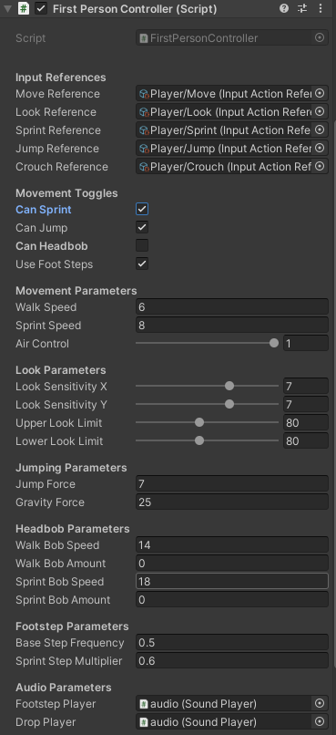

First Person Controller
Movement:

Code:
// Calculates the move direction from the current input and the player's rotation
private void HandleMovementInput()
{
float moveDirectionY = _moveDirection.y;
// Normalizes the current input so the movement has the same speed in all directions
float2 newDirection = math.normalizesafe(_currentInputDirection) * (_isSprinting ? _sprintSpeed : _walkSpeed);
// Sets the move direction
if (_characterController.isGrounded)
_moveDirection = transform.TransformDirection(new Vector3(newDirection.x, moveDirectionY, newDirection.y));
else
_moveDirection = transform.TransformDirection(new Vector3(newDirection.x * _airControl, moveDirectionY, newDirection.y * _airControl));
}Look Rotation:

Code:
// Calculates the move direction from the current input and the player's rotation
private void HandleLookDirection()
{
_cameraRotationX -= _mouseDisplacementThisFrame.y * (_lookSensitivityY * Time.deltaTime);
// Clamps the up and down rotation for the camera
_cameraRotationX = Mathf.Clamp(_cameraRotationX, -_upperLookLimit, _lowerLookLimit);
// Applies the rotation to the camera
_playerCamera.transform.localRotation = Quaternion.Euler(_cameraRotationX, 0, 0);
transform.rotation *= Quaternion.Euler(0, _mouseDisplacementThisFrame.x * (_lookSensitivityX * Time.deltaTime), 0);
}Movement Settings:

The inspector for this script was designed so it would be very easy to adjust the player's movement stats and options.
But also so it would be usable in other projects.